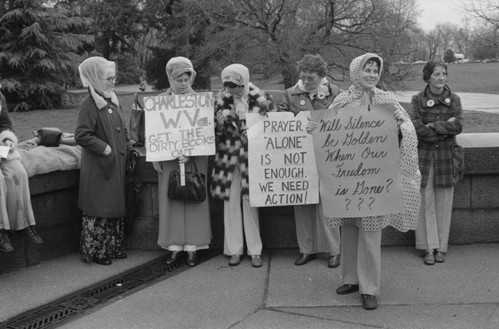
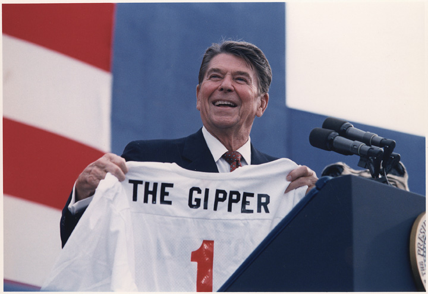
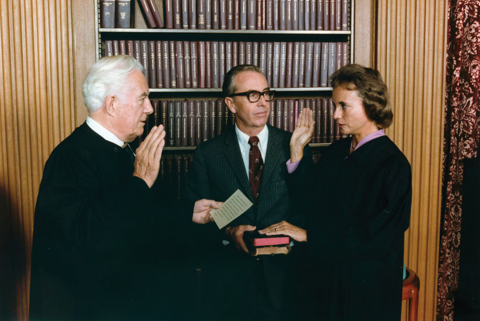

Many conservatives felt that their perspectives had been marginalized during the 1960s and 1970s. Conservative politicians believed that the shortcomings of liberalism had made many Americans eager for a different approach. These conservative politicians and voters were part of the New RightA coalition of fiscal and social conservatives who supported lower taxes and smaller government while espousing evangelical Christianity. The New Right rose to prominence in the late 1970s and early 1980s and supported political leaders such as Ronald Reagan. of the 1980s, a group that perceived their nation had been derailed by a liberal agenda in recent years. Conservatives hoped to reduce the size of the federal government beyond the military, decrease taxes and spending on social welfare programs, and find a way to repair the nation’s economic strength and global prestige. Most conservatives supported the end of segregation and hoped to end discrimination in employment. However, they disagreed with many of the strategies used to achieve these goals and hoped to reverse programs designed to achieve racial balance through affirmative action.
Figure 13.1

Ronald Reagan shakes hands with President Gerald Ford at the 1976 Republican National Convention. Reagan had just been narrowly defeated by Ford in the Republican primaries, but Reagan’s strong showing against the incumbent president demonstrated the former actor’s political appeal to a growing conservative movement.
Just as the New Left sought to distance themselves from the Socialists of the “old left,” the New Right attempted to shed its association with the “old right” that had attempted to keep women and minorities “in their place” during previous decades. The New Right hoped to mix compassion and conservatism, assisting the poor but avoiding the direct welfare payments they believed discouraged individual accountability by rewarding those who did not work. They also hoped to replace the nation’s progressive tax code that charged wealthier Americans higher rates with a new tax bracket they believed was more balanced. By this perspective, Americans who had demonstrated initiative and entrepreneurial skill should be permitted to keep more of their income as a means of encouraging reinvestment.
The conservatives of the 1980s had learned from the social movements of the 1960s, especially the importance of simple and direct messages appealed to Americans’ sense of justice. However, while liberals had looked toward the future in crafting their message, conservatives looked toward the past. This orientation helped the New Right win many supporters during an era of uncertainty about the future. It also offered tremendous appeal to those who feared that traditional values were slipping away. At the same time, the nostalgic orientation of many conservatives encouraged the creation of a sanitized version of the past that neglected America’s many failures both at home and abroad. Perhaps unintentionally, the New Right appealed to many of the same people who had opposed the expansion of civil rights. As a result, there remained a tension between those of the New Right that sought both equality and limited government and those who simply wanted to roll back the clock to another era.
What the base of the conservative movement lacked in racial diversity, it sought to make up by representing a number of different backgrounds and perspectives. Evangelical Christians, struggling blue-collar workers, middle-class voters, and disenchanted Democrats united with economic conservatives and business leaders. Together these individuals supported a movement that merged conservative and probusiness economic policies with socially conservative goals such as ending abortion, welfare, and affirmative action. Interest groups affiliated with the Republican Party also stressed a return to moral standards they identified as “family values.” These conservative groups increasingly viewed opposition to multiculturalism, gay rights, the feminist movement, abortion, busing, affirmative action, illegal immigration, and welfare as panaceas for the nation’s ills.
This new conservative movement advanced a populist rhetoric that appealed to the working and middle classes in ways not seen in US politics since the turn of the century. Unlike the People’s Party of the 1890s, which focused primarily on economic issues, the public focus of the new conservative coalition was on social issues. The challenge for the New Right was that modern politics required the mobilization of both wealth and the masses, two groups that had traditionally opposed one another. The strength of the conservative movement was its ability to weld probusiness economic policies with support for conservative social issues in a way that attracted a core group of devoted supporters and the backing of wealthy donors.
Without the Evangelical revival of the late 1970s and early 1980s, such a coalition might have never occurred. The United States experienced a period of religious revivalism during the late 1970s and early 1980s. Similar to the Great Awakening of the early eighteenth-century, charismatic religious leaders became national celebrities and attracted legions of loyal followers. The most outspoken of these leaders were a new breed of clergy known as “televangelists” who attracted millions of loyal viewers through religious television programs. Televangelists like Billy Graham, Pat Robertson, and Jim and Tammy Faye Bakker saw their virtual congregations grow as they progressed from old-fashioned revival meetings to radio programs and eventually popular television programs like the 700 Club—each broadcast on several Christian cable networks.
Figure 13.2
Evangelical Christians formed the base of the New Right. Pictured here is a group of fundamentalist Christians in Charleston, West Virginia. Evangelicals made national headlines in 1974 when they protested the use of textbooks they believed contained a liberal agenda to spread ideas such as multiculturalism.
Evangelical Christian denominations experienced a tremendous surge in membership during these years. Southern Baptists become the nation’s largest denomination while the more rigidly structured Christian denominations declined in membership. Christian religions in which membership largely shaped one’s daily life, such as the Church of Jesus Christ of Latter-Day Saints (known colloquially as the Mormons), Seventh-Day Adventists, and the Assembly of God also experienced tremendous growth and influence.
While many of these churches avoided direct political affiliations, some televangelists and independent clergy saw political action as part of their mission. These and other religious leaders advocated a host of conservative social issues and recommended political candidates to their followers. Most churches avoided explicit support for a particular candidate or political party for a variety of reasons. Churches were exempt from taxes because of the doctrine of separation of church and state. Many believed sponsoring political candidates threatened that separation and would lead to forfeiture of a church’s tax-exempt status. Televangelists like Jerry Falwell challenged that division along with several other leading religious conservatives. Falwell hosted the popular Old Time Gospel Hour and solicited his donors to join his political action committee, known as the “Moral MajorityA political action group consisting of an estimated 4 million evangelical Christians at its peak in the early 1980s. The Moral Majority was led by televangelist Jerry Falwell and supported issues such as legalizing school prayer, teaching creationism rather than evolution, and outlawing abortion..” These and other political groups claimed responsibility for the election of President Ronald Reagan and a host of other conservative Republicans. The boast was likely a stretch in the case of Reagan, especially given the public’s frustration with Carter and the small following these interest groups enjoyed in 1980. However, during the 1982 congressional election, groups such as the Moral Majority enjoyed the support of millions of donors. As a result, the endorsement of these religious-political groups was essential in many congressional districts.
The religious fervor of the 1980s featured aspects of protest against the materialism of the decade, as well as a celebration of it. Just as some Puritans of the colonial era believed that wealth was a sign of God’s favor, wealthy individuals during the 1980s were more likely to flaunt their affluence than previous generations. Displays of conspicuous consumption had become regarded as unsavory during the more liberal era of the 1960s and 1970s, but during the 1980s, they were once again celebrated as evidence that one adhered to righteous values such as hard work and prudence. Many of the leading televangelists joined in the decade’s celebration of material wealth by purchasing lavish homes and luxury items. The result was a number of high-profile investigations into the possible misuse of donations by televangelists.
Many conservatives, especially white Southerners, inherited traditions of suspicion toward the federal government. This circumspection was magnified by the federal government’s legalization of abortion and stricter enforcement of the doctrine of separation of church and state in the public schools. Conservatives also bristled at many of their governmental leaders’ growing toleration of homosexuality while mandatory school prayer and state-funded Christmas celebrations were forbidden. From the perspective of social conservatives, each of these occurrences demonstrated that large and powerful government bureaucracies were more likely to support liberal causes. As a result, Evangelicals increasingly supported both social and fiscally conservative causes. Tax breaks, the elimination of welfare programs, and the reduction in the size of the federal government became leading issues of the new Evangelicals. However, most of the new religious right also supported increasing the power of the government to ban behaviors they believed were sinful, while supporting increased authority for law enforcement and larger budgets for national defense.
A variety of conservative intellectuals who were concerned with each of these social issues had developed a number of organizations dedicated to advancing their ideals among the American people. These “think tanks,” as they would euphemistically be called, included the American Enterprise Institute and the Heritage Foundation, among others. Each of these groups depended on the donations of both rank-and-file conservatives and a number of wealthy donors. As these groups and the conservative causes they believed in grew in popularity, conservative politicians won elections by promoting the issues these think tanks supported. Although many conservative politicians tended to subordinate their economic platform in favor of discussing hot button conservative issues that mobilized their supporters, by 1980, many conservative voters also came to believe that lowering taxes for corporations and the wealthy while reducing government spending for social programs would lead to greater prosperity. In other words, the conservative movement succeeded not only by mobilizing voters on social issues but also by altering the perception of the government’s proper role in the economy. Whereas middle- and working-class Americans had been more apt to support unions and progressive tax policies during the previous three decades, by the 1980s, a growing number of these same individuals agreed with conservatives about the potential danger of powerful labor unions and feared that higher taxes for corporations and the wealthy might discourage economic growth.
Reagan first tapped into the frustrations of the 1970s as a gubernatorial candidate in California promising to cut taxes and prosecute student protesters. As a presidential candidate in 1980, he took every opportunity to remind Americans of the current recession. The Reagan campaign convinced many voters that Carter had made the problem worse by pursuing strategies that tightened the money supply and pushed interest rates as high as 20 percent. Although inflation was the main reason these rates were so high and Carter’s actions would reduce inflation over time, the inability of corporations and consumers to borrow money in the short term added to the dire condition of the economy in the summer of 1980. “Are you better off than you were four years ago?” Reagan asked, connecting the nation’s economic problems to the Carter administration. The fact that the recession predated Carter’s election mattered little. “A recession is when your neighbor loses a job,” Reagan later remarked as the election neared. “A depression is when you lose yours.” After pausing for effect, the former actor delivered his final line: “and recovery begins when Jimmy Carter loses his.”
Candidate Reagan promised to reverse America’s declining international prestige and restore its industrial production—two problems many agreed had grown worse under Carter’s watch. Reagan also promised to reduce taxes in ways that would spur investment and job creation, reduce the size of the federal government, balance the federal budget, and strengthen national defense. More importantly, he communicated what most Americans believed to be true—that theirs was a strong nation with a noble past. Behind Reagan’s populist appeal was one essential message with a long history in American political thought: freedom from government rather than freedom through government. Reagan preached that the cure for America’s ills was to take decision making and power away from Washington and place it in the hands of US businesses and consumers.
Figure 13.3
As a Hollywood actor, Ronald Reagan played the character of Notre Dame’s George Gipp. In this photo, Reagan is holding a customized jersey bearing the nickname “Gipper” but featuring America’s colors instead of the gold and blue of Notre Dame.
Critics of the California movie star claimed that Reagan’s rhetoric was hollow and clichéd, even if it was uplifting. They likely missed the point: Reagan was appealing to a nation that felt like it needed a win. Years before, Reagan starred in a film where he played the role of legendary Notre Dame athlete George Gipp. As the nation appeared to be up against the wall, the former actor now assumed the role of Notre Dame coach Knute Rockne, asking America to “win one for the Gipper.” Reagan’s use of the phrase was out of context, historically inaccurate, and offered nothing in terms of policy or substance. And it was political magic. If presidential elections were popularity contests, Carter did not stand a chance.
With his charisma, charm, and populist appeal, Reagan won the general election by sweeping forty-four states. The Republican Party won control of the Senate for the first time in several decades. The landslide was not as clear as it might appear, however, as voter turnout was so low that only a quarter of Americans of voting age actually cast ballots for Reagan. As some historians often point out, had voter turnout been the same as previous elections and if those voters had followed historical patterns (such as union members supporting the Democratic candidate), Carter would have actually won in a landslide. At the same time, voter apathy is usually a reflection of how many Americans feel about their government. As a result, the low turnout may have been its own kind of referendum on Carter’s presidency. The most significant factor in the election was the political power of the New Right. More than 20 percent of self-identified Evangelical Christians who had voted for Carter in 1976 indicated that they voted for Reagan in 1980.
Even Reagan’s opponents conceded that the new president was one of the finest public speakers when it came to delivering a scripted oration. Years in front of the camera meant that Reagan instinctively knew where to stand and what camera to look at, much to the chagrin of interns whose job it was to place tape marks and arrows on stages across the country. However, Reagan was often adrift when speaking without a script. He relied heavily on clichés and empty platitudes, and sometimes told stories from popular films as if they were part of history or his own life.
While most of Reagan’s tales were anecdotal in nature and some were simply meant to illustrate a point, Reagan’s casualness with the truth could also be quite damaging. As a candidate, Reagan aroused populist anger against welfare recipients by fabricating a story about a woman in Chicago’s South Side neighborhood. This scam artist reportedly drove a new Cadillac and had received hundreds of thousands of dollars in welfare checks under multiple names. Later investigations demonstrated that Reagan had made up the entire story. Even if Reagan would have offered a retraction, the populist anger against welfare recipients could not be easily reversed. Although the woman was fictional, Reagan played heavily on prejudices against African Americans by describing this “welfare mother” in terms that were clearly meant to imply race.
Many scholars in subsequent decades have questioned whether social conservatives had actually been tricked into voting for politicians who represented the interests of the wealthy and corporations while offering little support for social issues. Reagan had been president of the Screen Actors Guild and could hardly be counted on to support tougher censorship laws. As governor of California, Reagan had supported a reproductive rights law that removed barriers on abortions. Although he relied on the support of pro-life groups, once President, Reagan avoided direct action on the controversial subject of abortion. He also did little beyond offering verbal support for socially conservative causes such as school prayer.
Some observers were surprised that Evangelicals would support a candidate such as Reagan, a divorced Hollywood actor who did not attend church. In contrast, Jimmy Carter was a born-again Christian. However, Evangelicals understood that Carter did not believe that his personal religious ideas should influence policy and he generally supported the more liberal views of his Democratic supporters. In addition, many working-class voters supported Reagan’s proposed tax cuts, believing they would result in domestic job creation. Although their reaction confounded many liberals, cuts to welfare were also popular with the working-class voters because welfare had failed to eliminate poverty and seemed in many cases to offer a disincentive to work. Finally, in the wake of scandals involving union leaders such as Jimmy Hoffa, many social conservatives were also hostile toward unions.
Although he did little to further socially conservative causes through legislation, Reagan took immediate action against unions. One of Reagan’s first actions as president was to fire more than 10,000 federal air traffic controllers who were part of a union that was striking for a pay increase. Reagan replaced these workers with military personnel on active-duty orders, a move that quickly destroyed the strike and the union. Reagan also supported employers who used similar measures to crush labor activism. And yet 40 percent of union members still voted for Reagan over the Democrat Walter Mondale in 1984. Reagan and other conservatives also supported measures that lowered taxes for corporations and supported free trade policies that made it easier for US companies to open factories in foreign countries. By 1986, Reagan had slashed tax rates for the wealthy by more than 50 percent without similar cuts for the middle and lower classes. Although it confounded many Democrats, Reagan retained the support of many union voters and lower-income Americans through his second term.
Women had composed both the leadership and the rank-and-file of the New Left. The role of women was equally as important to the New Right during the 1980s. Mobilized in opposition to the Equal Rights Amendment (ERA), conservative women mirrored some of the tactics and organizational structure of civil rights activists. Conservative women leaned heavily on the church and other institutions, and also mirrored the organizational structure of previous social movements. The names of conservative women’s groups reflected their belief in traditional notions of family and gender. Women Who Want to be Women (WWWW) and Happiness of Motherhood Eternal (HOME) were two such organizations. Conservative women viewed the rapprochement of straight and lesbian activists within the feminist movement, along with recent decisions by the Supreme Court upholding abortion laws and banning school prayer, as proof that they were waging a war against the ungodly forces of both Sodom and Gomorrah.
Reagan’s nomination of Sandra Day O’ConnorAn attorney originally from El Paso, Texas, Sandra Day O’Connor became the first female Supreme Court justice in 1981. encouraged conservative women, less as a symbol of women’s advancement as the first woman to join the Supreme Court than the hope that O’Connor would reverse Roe v. Wade. Despite her conservatism, O’Connor and other Supreme Court justices upheld the legality of abortion in a number of cases, although they did support an increasing number of restrictions to the procedure. Many conservatives and Evangelicals felt betrayed by the Republican Party and began organizing direct protests against abortion providers.
Figure 13.4
Sandra Day O’Connor became the first woman on the US Supreme Court. Because she had a conservative orientation, many of the president’s supporters among the New Right hoped she and other Reagan appointees might overturn Roe v. Wade.
Thousands of antiabortion activists descended on Wichita, Kansas, under the auspices of a group called Operation Rescue in 1991. The majority of the participants in the self-labeled “Summer of Mercy” were women, many of whom physically blocked the entrances to abortion clinics and were among the 2,000 protesters who were arrested. At the same time, many conservative and evangelical women who opposed abortion also opposed the aggressive tactics of Operation Rescue. This was especially true of the individuals who harassed and even murdered abortion providers that summer. More representative of the conservatism of women during this period were the hundreds of thousands of local women who led community organizations that sought encourage single mothers to consider adoption. Others joined organizations that sought to ameliorate some of the social changes they felt had led to increases in the number of single mothers. Other conservatives sought to prevent drug addiction, crime, and pornography, and to reverse societal toleration for obscenities in Hollywood.
Protests against an increasingly secular popular culture raised questions regarding traditional modes of gender-based divisions of labor in modern families. For millions of women, a life dedicated to family was an important and fulfilling vocation, a dignified calling they feared the feminist movement sought to slander. Books written by conservative homemakers and career women alike proliferated during the 1970s and 1980s. For example, Helen Andelin’s Fascinating Womanhood sold millions of copies and launched a movement that inspired thousands of women to create and attend neighborhood classes and discussion networks. Andelin believed that the ideal family was one of male leadership and provision alongside female submission and support. Andelin asked her readers to consider what traits made them desirable to their husbands and strengthen their marriages by finding ways to increase this desire and better serve their husband’s needs. Although historians might question the accuracy of the author’s claims that this patriarchal model was ever typical in any era of American family life, Andelin described a mythical past that most Americans believed had existed. For millions of conservatives seeking a return to a bygone era, it naturally followed that the family should seek a return to traditional arrangements based on paternal leadership.
Other conservative women criticized Andelin as promoting a fiction that more resembled the 1974 novel The Stepford Wives than a well-adjusted family. Many conservative women simply sought to counter the image that stay-at-home mothers were somehow naive or victimized. These women agreed that gender discrimination did limit the options of women in the past and believed that women should be free to pursue careers. However, these women also feared that elevating the dignity of women in the workforce had at least unintentionally led many to question the dignity of labor within the home. Not all who espoused a return to traditional modes of gender and family were conservatives or Evangelicals, and many women who had enjoyed successful careers outside the home reported their equal happiness as homemakers. These women hoped to encourage the recognition that many “traditional” couples were genuine partnerships based on mutual respect.
However, for millions of US families, the tradition of women not working outside the home was not economically feasible. By the early 1980s, the majority of married women worked both inside and beyond the home. Many found the experience to be anything but liberating. While these women recognized that gender discrimination limited their career options, they aggressively countered notions that homemaker was a career of last resort. One of the leading criticisms of these women against the idealized superwoman of the 1980s who balanced career and family was related to the sacrifices such balancing required. Sociologists labeled the added burden of career and family the “second shiftA phrase connoting the added burdens of married women with full-time careers who were still expected to fulfill the domestic responsibilities of a homemaker and parent.,” reflecting the frustration of women who found that their husbands seldom agreed to share domestic responsibilities, even though wives were increasingly likely to work the same number of hours outside of the home.
Income tax in the United States historically followed the doctrine of progressive taxation, creating tax brackets that increase as an individual earns more money throughout the year. For example, a physician making $200,000 might have the majority of her income taxed at 40 percent, while a firefighter who made $35,000 would be taxed at 20 percent, and a college student working part time who earned only $5,000 might pay no federal income tax at all. For Reagan, the progressive tax structure was responsible for the persistence of America’s economic problems. As a Hollywood actor in an era where taxes on those with large salaries was very high, Reagan saw more and more of his income go to taxes as his annual earnings increased. After producing a couple of films each year, any additional money Reagan might make could be taxed at rates approaching 90 percent when adding California’s state tax to the federal rate. In response, Reagan chose to make only a handful of films each year.
Reagan drew heavily from his experience as an actor in many aspects of his presidency. In the case of tax policies, the president believed that high tax rates discouraged other talented and successful individuals in their chosen fields from making a maximum effort each year. In his field, it might mean fewer movies. However, if entrepreneurs and financiers followed a similar strategy, then high taxes would constrain economic growth. Believing in a sort of economic Darwinism, Reagan argued that the best way to encourage job creation was to reduce the taxes for high-income Americans because these elites had demonstrated a talent for creating wealth. The wealthy, Reagan argued, could be expected to use their money to produce more wealth through investment and innovation that would spur job growth for everyone else. To this end, Reagan’s Economic Recovery Tax Act of 1981 reduced the top tax bracket from 70 to 50 percent while slashing taxes paid by corporations.
The super wealthy were not the only beneficiaries of Reagan’s tax cuts, which led to an overall reduction of tax rates by 30 percent throughout his first term. More controversial was the reduction in inheritance taxes. These taxes were not based on earned income, but rather taxed the transfer of wealth from one generation to another. These taxes had inspired many of the richest Americans to donate their fortunes in previous decades. As a result, removing the inheritance tax was much harder to justify in terms of economic stimulus.
Figure 13.5

President Reagan discusses a chart that portrays his tax plan as offering substantial savings for the average family. In reality, Reagan’s tax policies favored the wealthy and corporations, something the president’s supporters believed would result in greater overall economic development.
In his second term, Reagan passed the most sweeping changes to the tax code since the Sixteenth Amendment established the modern system of federal income tax. The Tax Reform Act of 1986A sweeping tax reform law that simplified the tax code and eliminated some tax shelters and other methods that had been used in the past to hide income or illegally reduce one’s tax burden. The law reduced the top tax rates wealthy individuals paid from 50 percent to 28 percent, while raising the minimum tax rate to 15 percent lowered the highest tax bracket from 50 percent to 28 percent while increasing the minimum rate from 11 percent to 15 percent. The reform also eliminated many of the various tax brackets between these rates, meaning that most Americans either paid 15 percent or 28 percent. A few provisions helped the poor, such as a cost-of-living adjustment to the amount of money that was exempt from taxation so that those living below the federal poverty level no longer received a tax bill. Other reforms eliminated various tax shelters for individuals, although many of these ways of hiding income remained for corporations. The law also required parents to list the social security numbers for each dependent child they claimed for tax purposes, eliminating the ability of individuals to increase their tax deductions through fraudulently listing imaginary dependents. As a popular economist has shown, the reform led to the disappearance of 7 million “children” on April 15, 1987.
Reagan’s tax cuts reduced federal revenue by hundreds of billions of dollars each year. This reduction of income could only be offset by equal reductions to the federal budget, borrowing money, or a massive economic boom that created so much taxable wealth that the government still took in more money each year. Reagan promised the latter would occur—the result of an unfettered economy free from aggressive taxation and government regulation. Reagan also proposed significant budget cuts to Social Security and Medicare, just to make sure that the federal budget could be balanced while the nation awaited the economic bonanza he believed his tax cuts would produce. However, cuts to Social Security and Medicare provoked outrage, and Reagan quickly reversed course. In the end, the president approved a budget that was similar to previous years except with massive increases for the military.
Reagan’s defense budgets continued to grow each year, doubling the annual budget to an incredible $330 billion by 1985. As a result, many challenged the president to identify exactly how he would fulfill his promise to reduce the nation’s indebtedness. Even Reagan’s budget director admitted that his administration’s economic projections were based on an optimistic faith that reducing taxes for the wealthy would “trickle down” to the middle and lower classes through job creation. This confidence in supply-side economicsAn economic theory that suggests government policies should be geared toward keeping revenue and economic decisions in the hands of businesses and consumers. While Keynesian economics suggests using the federal government to stimulate growth through a variety of measures, supply-side economics suggest lowering taxes and regulations on business and trade as ways of stimulating the economy. that emphasized government intervention to spur growth and investment through tax reduction was certainly not a new idea. However, because the Reagan administration pursued the principles of supply-side economics with such vigor, the basic theory that increasing the wealth of the wealthy would eventually trickle down to the rest of the nation became known as “Reaganomics.” Critics of the president used other monikers such as “voodoo economics” to describe Reagan’s theories.
Supporters of Reagan’s belief in supply-side economics point out that the Dow Jones Industrial Average—a measurement of the value of the 30 largest companies in the United States—tripled during the 1980s. Inflation fell from over 10 percent when Reagan took office to less than 4 percent, while unemployment fell from 7 percent to just over 5 percent. Critics of Reagan point to the increasing disparity between the rich and the poor that also accelerated during the 1980s as being the real consequence of Reagan’s regressive tax policies. They also disagree that tax cuts for the wealthy created jobs, pointing out that the percentage of jobs that paid wages above the poverty level had declined. Critics agree that tax cuts for corporations provided additional revenue for investment, but argue that much of this investment had been used to create manufacturing facilities in other nations.
Although the president’s critics usually concede that Reagan’s tax cuts and military spending did spur the economy and create some jobs in the short run, they argue that they did so only by borrowing massive sums of money. The size of the national debtThe total amount of money that a nation presently owes its creditors.—the cumulative total of all the money the federal government owes—tripled from $900 billion to nearly $3 trillion in only eight years. Between the start and conclusion of the Reagan administration, the United States had gone from being the leading creditor in the world to the most indebted nation in the world.
Previous administrations tolerated deficit spendingThis occurs when a government borrows money to finance its operations.—the practice of borrowing money to make up for the amount the government overspent in one particular year. However, the amounts the government borrowed were usually quite small unless the nation was at war. After the 1930s, some government borrowing was also accepted in times of financial crisis as a way to spur the economy. Neither scenario applied to the eight peaceful years of Reagan’s presidency, yet the government accumulated a debt that was three times greater than the combined annual deficits of the past two centuries. And contrary to the tradition of repaying the debt, deficits and debt continued to grow at the same pace when former vice president George H. W. Bush took office. The interest on the debt alone quickly became the largest non-defense-related federal expenditure. As a result, any effort to reduce the national debt could only be achieved after balancing the budget and paying hundreds of billions of dollars in interest.
Political candidates are known for making sweeping promises, yet the question of whether Reagan kept his pledge to restore the strength of the US economy remains an item of fierce debate. Democrats are quick to point out that Carter’s decision to halt inflationary measures as well as the normal business cycle were part of the reason the economy recovered during the 1980s. Reagan’s critics also contrast his promise of fiscal responsibility and smaller government with the tripling of the national debt and the expansion of the federal government, which grew in terms of both budget and the number of federal workers. Furthermore, President Reagan never submitted a balanced budget, and even the debt projections that came from his budget office were too optimistic.
Reagan himself usually deflected the criticisms of his economic policy in a good-humored manner that undermined some of his critics. “You know economists,” he would respond, they “see something that works in practice and wonder if it works in theory.” Reagan even seemed impervious to an assassin’s bullet that ricocheted and lodged near his heart in March 1981. The unfazed president thanked nearby secret servicemen for their service and even joked with surgeons by asking if they were Democrats before they removed the bullet. Most Americans lacked a sophisticated understanding of supply-side economics, but they knew the economy had floundered under Carter and was recovering under Reagan. Questions regarding the long-term wisdom of Reagan’s policies continue to engage historians and pundits alike, with responses usually reflecting both economic theory and one’s political orientation.
While deficits would not be felt for many years, government deregulationDeregulation is the reduction or elimination of laws previously enforced on a particular industry. of various industries would have a more immediate impact on the economy during the 1980s. Democrats and Republicans alike approved the elimination or reduction of government price controls during the 1970s and 1980s. Nixon removed price controls of oil and natural gas in response to the Organization of the Petroleum Exporting Countries (OPEC) embargo, and Carter eased price controls and regulations governing the transportation industry. Reagan accelerated this trend, believing that most forms of federal regulation, including consumer and environmental protection laws, hampered business growth. In contrast to the Department of Defense, who was told by the president to “spend what you need,” Reagan slashed the budgets of federal agencies like the Occupational Safety and Health Administration (OSHA) and the Environmental Protection Agency (EPA). More disturbing to environmentalists, the EPA reinterpreted the Clean Air Act and other laws in a way that was so favorable to industry that an investigation was conducted. The inquiry revealed that twenty administrators in the EPA had each accepted corporate bribes.
Because utility companies were public utilities and had a natural monopoly in the communities they served, these industries had been heavily regulated. However, Reagan reduced these regulations in hopes of increasing competition and reducing prices. Airlines and other common carriers were treated much the same way, with the federal government transferring the control over prices to the executives of these companies and the free market. Energy prices and airfares fluctuated according to market forces following deregulation. These reforms led to mostly lower prices in air travel, but also led to numerous difficulties for utility consumers in some markets.
While the results of deregulation were mixed in most industries, the deregulation of the financial industry led to complete disaster. Banks known as savings and loan institutions (S&Ls) had a reputation for safety because they followed strict rules regarding the ways they could invest their depositors’ money. Chief among these rules was the provision that S&L loans be backed by collateral such as a home mortgage. However, interest rates were at record highs during the early 1980s, and the Reagan administration agreed to ease these restrictions and permit S&Ls to make riskier loans. By the late 1980s, hundreds of the S&Ls were facing bankruptcy due to bad loans and a decline in the real estate market.
Because S&Ls were part of the banking system, each depositor’s savings accounts were insured by the federal government. As a result, the government was forced to pay more than $150 billion in federal bailouts to make sure families and businesses that deposited their money were protected. Although both parties approved the deregulation of the banking and investment industry, the resulting failure of many leading financial institutions and resulting Savings and Loan BailoutAs a result of deregulation and bad investments by banking institutions known as savings and loan institutions, the government paid out at least $150 billion to holders of insured deposit accounts at these institutions. of the late 1980s and early 1990s was blamed almost solely on the Republican Party. Given Republican efforts to lower corporate taxes and the tendency for Republicans to be the most enthusiastic supporters of deregulation, it is easy to see why most Americans blamed the party of Reagan when deregulation led to default. However, many of the congressmen who approved the deregulation and were later investigated for accepting illegal donations from members of the banking industry were Democrats.
The Department of the Interior had been insulated from controversy since the Teapot Dome Scandal of the 1920s. However, Reagan appointee and secretary of the Interior James Watt kept his agency in the headlines throughout the 1980s. One of Watt’s comments regarding his religious beliefs were regularly quoted out of context by the political left in an attempt to discredit the secretary as well as other religious conservatives. During his Senate confirmation hearing, Watt responded to a question about long-term preservation of resources by stating that he did not know how many generations would pass before the return of Christ but that Americans must shepherd their resources for future generations until that time.
Many on the left at the time reported that Watt had suggested environmental policies did not matter because the end of the world was nigh. Watt himself was fond of misrepresenting the words of his opponents and had earlier declared that there were only two kinds of people in the United States: liberals and Americans. This war of words did not mask the actions of Watt’s department for long, as nearly two-dozen high-ranking officials were forced to resign for improper actions. In addition, several officials were convicted of accepting bribes or other ethics violations. Similar to the Teapot Dome Scandal, Department of the Interior officials permitted oil and timber companies to lease, log, mine, drill, and otherwise commercially develop millions of acres of previously protected areas of the federal domain at prices that were often far below estimated market value. One of the most immediate results was the growth of environmental interest groups such as the Sierra Club, whose protests resulted in some areas of the federal domain again being declared off limits to developers.
The Reagan administration also approved a wave of corporate mergers that consolidated vital industries in the hands of a few companies. Critics protested that the government-approved mergers created monopolies. The architects of these deals argued that the mergers created stronger and more efficient businesses. Other practices that were common throughout the 1980s, such as leveraged buyouts, increased the risks to the entire financial system. These leveraged deals permitted a group of investors to purchase a controlling stake in a publicly traded company by using loans to purchase shares. In addition, these investors often secured the loans by using the stock they had just purchased on credit as collateral. As a result, a small drop in the price of any particular stock could bankrupt an entire company and send shockwaves throughout the financial system.
This is precisely what happened on October 19, 1987, when Wall Street experienced the worst crash in its history. Although the market had risen quickly in proceeding years due to speculation, these gains were erased in a single day when the Dow Jones average fell over 20 percent. Companies such as RJR Nabisco that participated in the leveraged buyouts were forced to lay off thousands of employees, yet the CEO of the company received over $50 million in compensation. Brokers that facilitated these and other risky strategies, such as junk bond investor Michael Milken, earned over $500 million in 1987 alone. Unlike previous Wall Street financiers, such as JP Morgan, Milken’s deals did not support economic growth by matching legitimate entrepreneurs with investors. Instead, Milken’s incomes were commission-based, which led him to violate federal laws in order to increase the volume of his transactions. Milken served only two years of a ten-year prison sentence and remains one of the wealthiest men in America.
Accompanying many of these high-stakes mergers was the dreaded news of “restructuring” that often meant the loss of jobs for the employees of the affected corporations. For those in manufacturing, restructuring was often a code word for laying off employees to save money. Sometimes restructuring meant that a company was preparing to close a factory in the United States in favor of another country where operating costs were lower. At other times, it simply meant laying off full-time employees with salaries and benefits and replacing them with low-wage hourly workers.
Even privately owned companies that had historically offered high wages to their employees, such as Levi Strauss & Co., soon adopted these strategies. In some cases, these companies had no choice if they wanted to stay competitive. At other times, these measures were simply used to enhance profitability. Levi’s blue jeans were the most recognizable American fashion; yet between the early 1980s and 2003, each of the dozens of US Levi’s factories was closed. Each announcement resulted in thousands of workers losing jobs that were relatively well paying. Although what was happening at Levi Strauss & Co. was typical of the clothing industry, the fact that the United States no longer produced Levi’s came to symbolize the US trade imbalance, which grew to $170 billion by 1987.